About How-To-Project

My How-To-Project is devoted to building of new generation native cross-platform applications using Xamarin platform. The idea behind the Xamarin is to share common code when creating iOS, Android OS, and Windows OS apps and have native UI, native API access, and native perfomance at the same time.
1. Installation Guide
Please follow to
getting started page for the Xamarin Platform
for installtion directives. Installation consists of a few parts and takes a while.
I noticed lack of feedback during installation and even thought for a moment that installation froze.
Thus, be patient during installation.
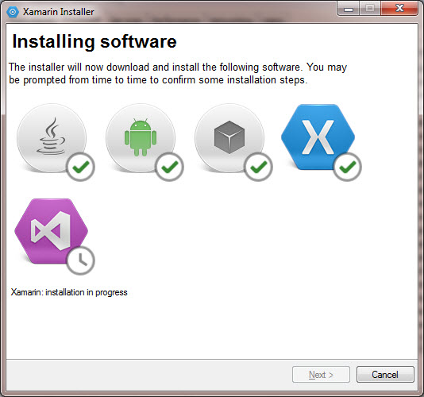
2. Configuration of Xamarin.
There are two options for creating apps using Xamarin:
- Visual Studio 2012, or higher
- Xamarin Studio
Fixing error opening layout .axml files
I decided to use Visual Studio since it’s a more familiar IDE for me. I used a starter guide to learn the platform. The guide introduces Xamarin.Android using a simple app, Tasky. After downloading the app, I launched Android version in Visual Studio 2013. When I tried to open HomeScren.axml layout file in the project, Visual Studio crashed. Then I tried to open layout file .axml Xamarin Studio, and it crashed, too, with the following error message:
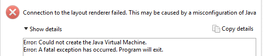I found a Xamarin forum’s post referred to this error. To solve the problem, I used first approach described in the post. I changed Java SDK version to 1.8 in Xamarin Studio options menu
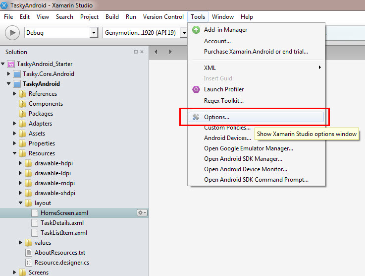 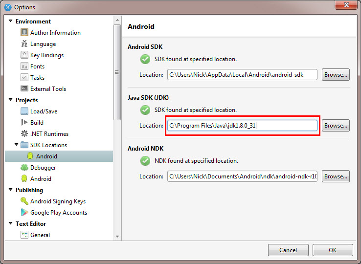
It’s a unexpected problem becuase during installation Xamarin required to install Java SDK 1.7 and dialog window explained that it will work only with Java SDK 1.7 that is installed automatically during Xamarin setup. The Xamarin website says: “It is essential to install the 32-bit version of the Java JDK even if you're using 64-bit Windows. It is also important that v1.7 of the Java JDK is installed (although it is fine to have 1.8 or newer installed at the same time).” After I pointed to Windows x64 version Java SDK, the error disappeared, and layout started working correctly in both Xamarin Studio and Visual Studio 2013.
Running Reusable Cross Platform Library Projects Issue
When I tried to run an of Cross Platform Library Project in the guide, it didn't compile although it is being built without issues. The project consists of three sub-project (each for an OS). I had only Android device to test on. The error was ambiguous:
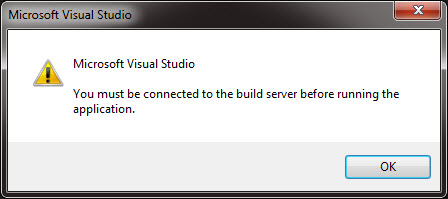I was sure that you can run the app on one device even if you can test only one OS. In my case I had only Android device at hands. After tinkering for a while, I found out that iOS project was set as a Startup Project by default, so the fix was to choose Android OS as a Startup Project instead. So be sure to set project as a Startup Project according to your device.
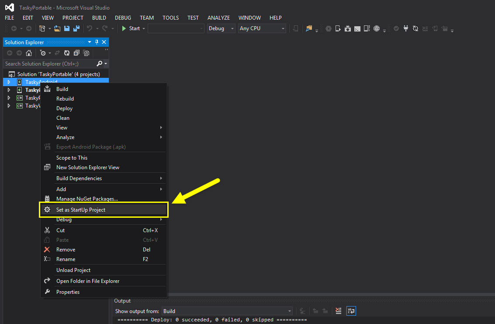3. Emulator Devices
- iOS: If you expect to use iOS emulator, it’s not possible. Only native iOS device connected to your Windows or Linux can be used to run applications. Explnation is here
- Windows phone emulator requires Windows 8.1
- Genymotion:emulator that’s much faster than Android Emulator by Google. Run Genymotion before opening Xamarin Studio or Visual Studio in order to let it be found.
Since I don’t have iOS device and have Windows 7, I couldn’t try Xamarin on iOS and Windows OS phones. Therefore, I experimented only with Android. However, these experiments are appliocable for other OS because some application may share up to 100% of C# code, according to Xamarin.
4. Cross-Platform HTTP Request using Shared Project
There are two options of creating Cross-Platform native app:
-
Using PCL (Portable Class Library).
According to the Xamarin's guide,
there must be "Portable Class Library" when creating new project in Visual Studio 2013.
However, I haven't found it. Instead there is a Class Library (Portable) that you should
select to create PCL for your project:
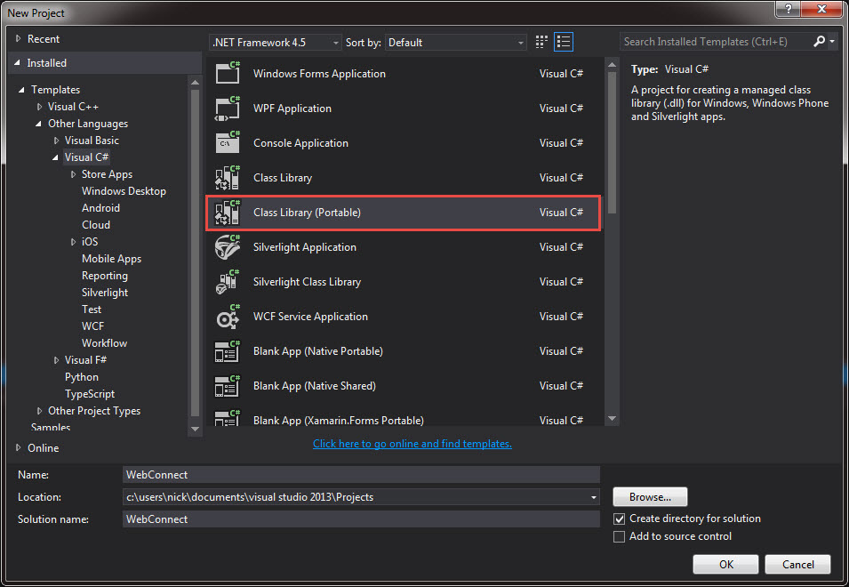
- Another options is Shared Projects
I could not find example of the http request that uses RESTful Web API in the Shared Project portable Xamarin app. There is one example that utilizes RESTful API in Xamarin.Android platform; however code is not portble since written specifically for Android. Another useful example I have used is this walkthrough
Here I will create Shared Project where all the buisness logic is shared between platfroms. The only unshared code between platforms is UI.Beacuse I can test it on Android OS, I created only Android UI that uses the shared code.
Steps:
- Create Blank Android Project as descibed here. I named my app "RESTfulApp" since I'm going to make http request using RESTful API created by me for previous homework.
-
Add empty Shared Project to the solution as shown below. Call it "Shared"
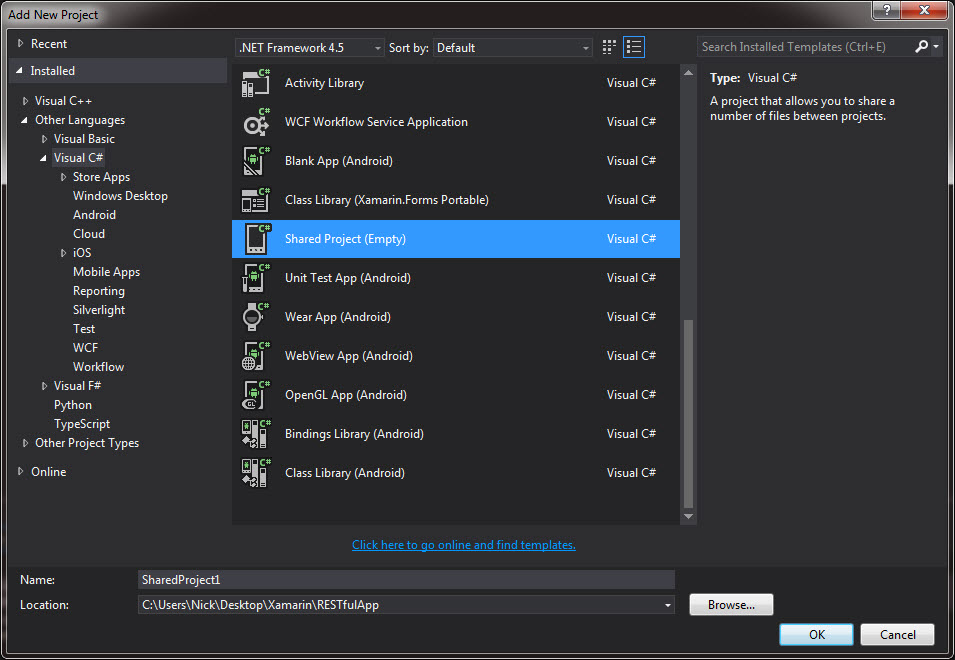
- Add reference to the created Shared Project into RestfulApp 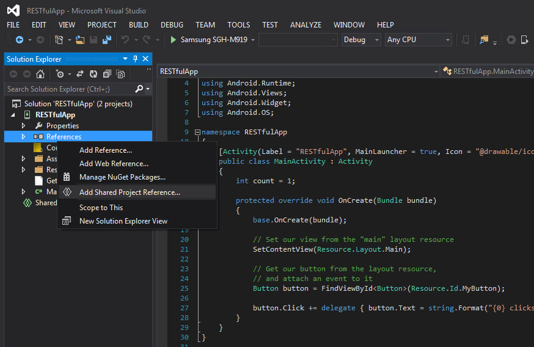 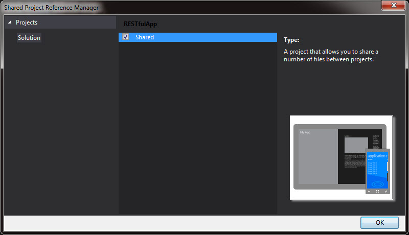
- Add reference to the created Shared Project into RestfulApp 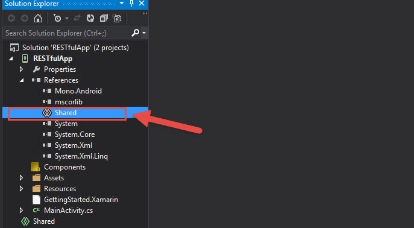
- Intall and add reference to Newtonsoft.JSON packet to deserialize json 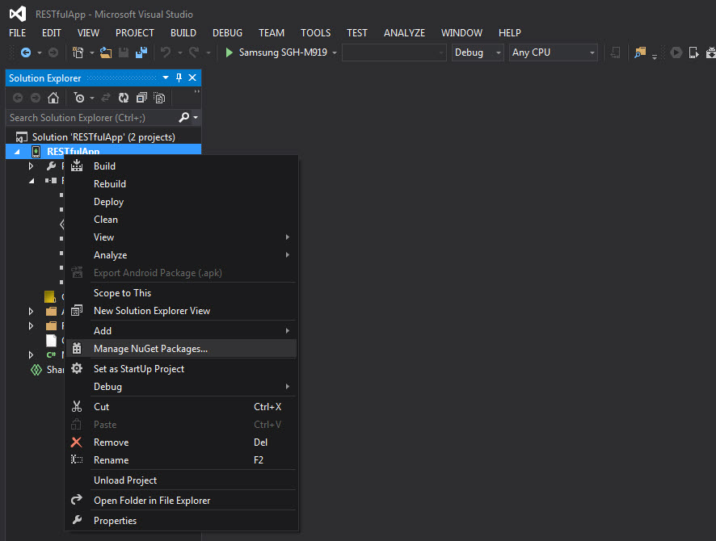 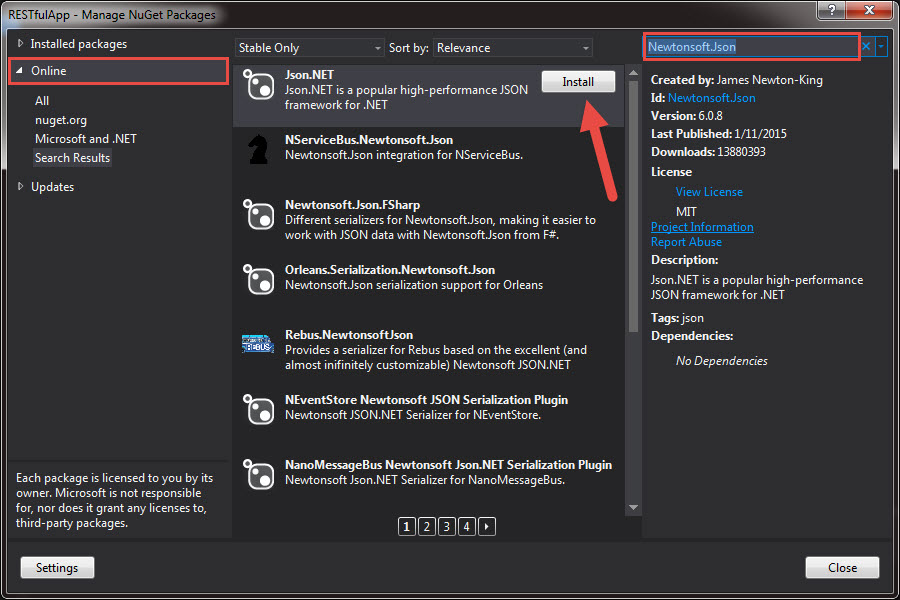
- Add reference to MSCSharp 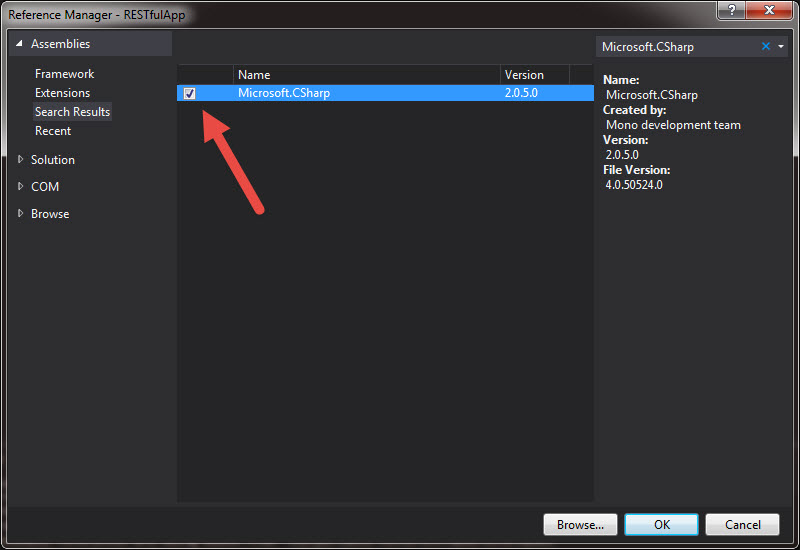
- Now we should create Supplier class in the Shared 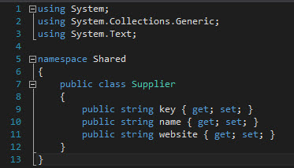
- Then we need to create class that is responsible for fetching data using HttpWebRequest. Let's call the class "DataService" and include the only function that is called asynchronously from the main UI thread. Since we are going to deserialize Json response, don't forget to include "using Newtonsoft.Json;" The function returns deserialized object that will be processed in another class we will create called "Query". 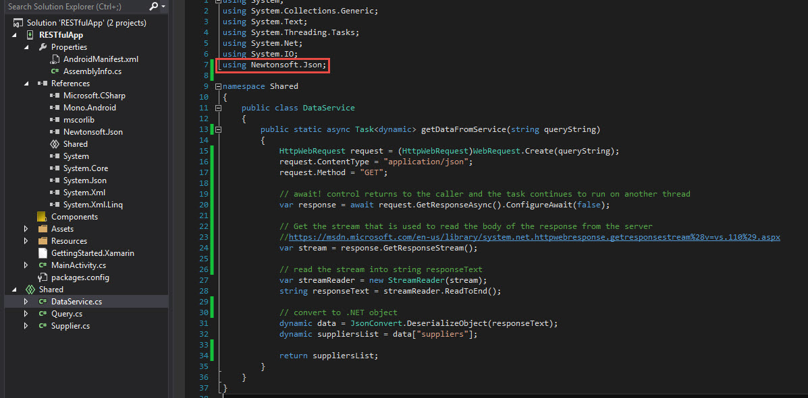 Json response has the following format: 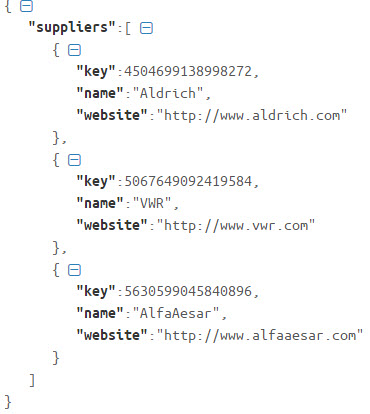
- At the next step we will create Query class that is responsible for parsing the data from deseirialized Json and saving it into Supplier objects that populate list of supplier objects and returned to the main UI thread. 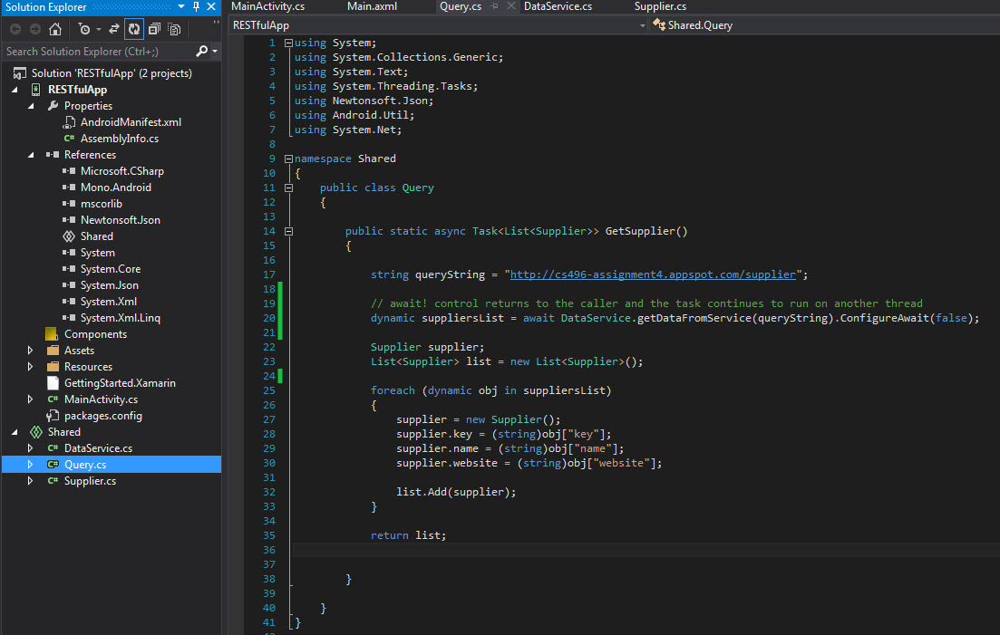
- Now we are ready to create Android UI that consume the data that the shared code provides. To show the fetched data, we should create ListView object and populate it via ArrayAdapter with list of strings where each string will contain one supplier's data. A good tutorial for creating ListView in C# can be found here 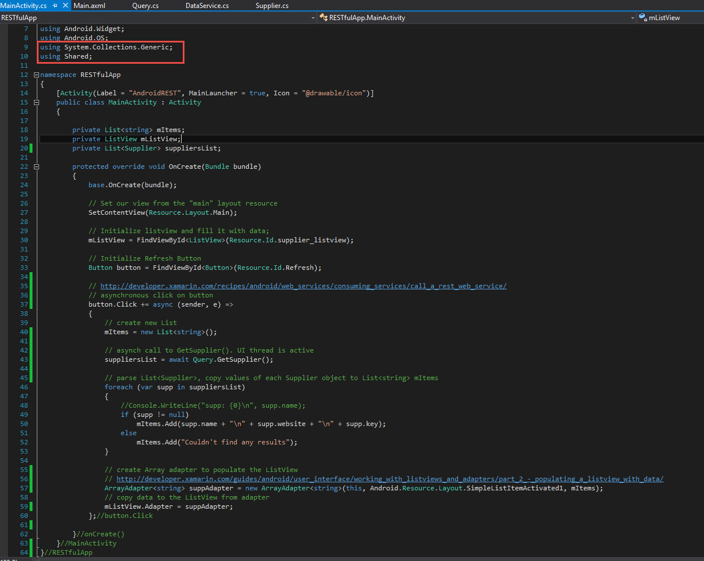
- Here what is how the result of the work should look like:
Writing Shared Code